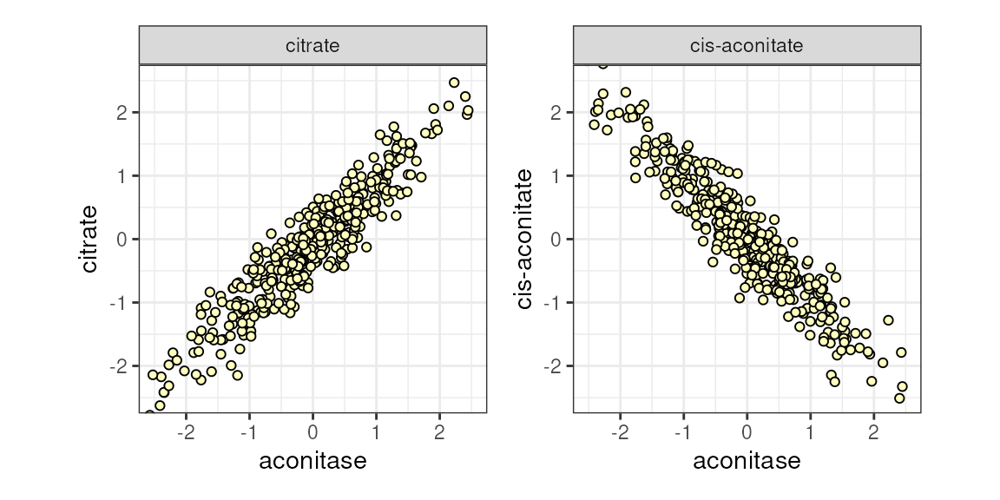
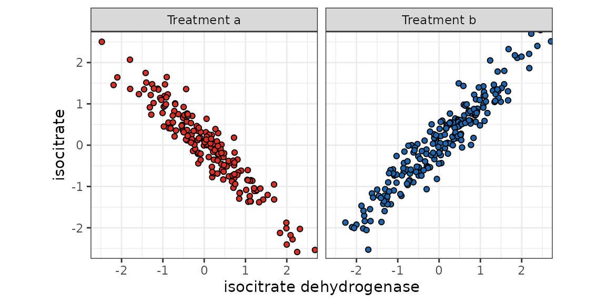
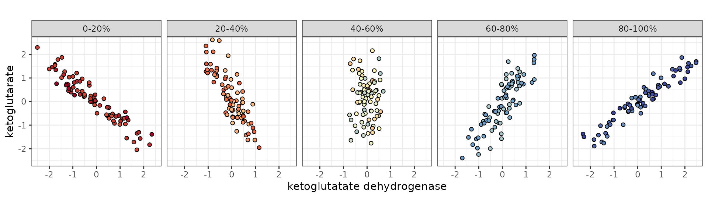
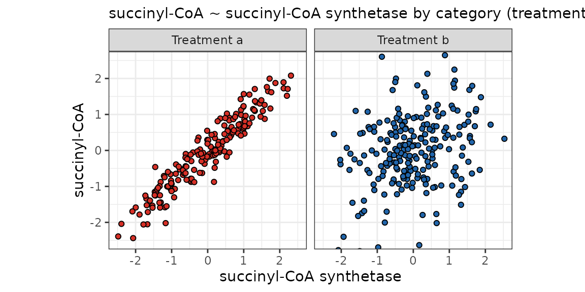
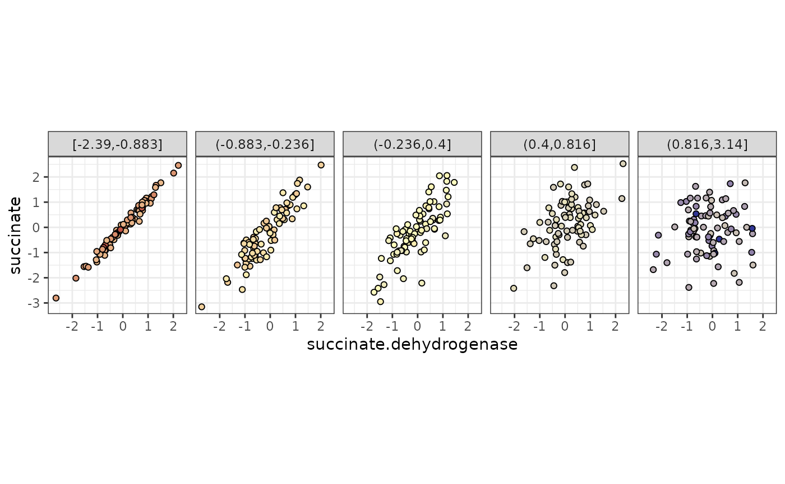

Overview
The goal of anansi is to provide a framework to
interrogate interactions between different ’omics datasets, or more
generally, between data modalities. More concretely, this involves
estimating the association between pairs of features in several
contexts. Anansi uses a (bi)adjacency matrix to determine which pars of
features to investigate. For more on the adjacency
matrix, see the vignette. Here, we will discuss the different
statistical models used to estimate the associations between
feature-pairs.
Anansi aims to follow the style of stats::lm() and this
vignette provides equivalent models in stats as theoretical
familiar ground. For these reasons, I warmly recommend the documentation
of stats for further reading.
This vignette is divided by three sections:
Getting started: The full model
After determining which pairs of features should be investigated,
anansi fits several linear models for which it returns
summary statistics. The user has control over these models through the
formula argument in anansi().
Setup
We will use the same example as in the
vignette on adjacency matrices. There, we also introduce the
AnansiWeb class and demonstrate using
weaveWeb(). Please note that the data used in this example
have been generated with statistical associations manually spiked in for
this vignette.
# Setup AnansiWeb with some dummy data
library(anansi)
web <- krebsDemoWeb()Formula syntax
For each of the feature-pairs that should be assessed, anansi fits similarly structured linear models. Anansi supports complex linear models as well as longitudinal models using the R formula syntax. The most basic model in anansi is:
## y ~ xwhere y refers to is the feature from
tableY and x is the corresponding feature in
tableX.
Besides estimating the asociation between y and
x, anansi also allows for the inclusion of covariates that
could influence this association. With full model, we
mean the total influence of x, including all of its
interaction terms, on y. For example, if our input formula
was:
## y ~ x * (group_ab + score_a)R rewrites this as follows:
## y ~ x + group_ab + score_a + x:group_ab + x:score_aThe variables that constitute the ‘full’ effect of x would be:
x + x:group_ab + x:score_a.
Formula in anansi()
When providing a formula argument in the main anansi()
function, the y and x variables should not be
mentioned, they are already implied. Rather, only additional covariates
that could interact with x should be provided in the
formula argument.
out <- anansi(web, formula = ~group_ab + score_a, groups = "group_ab")## Fitting least-squares for following model:
## ~ x + group_ab + score_a + x:group_ab + x:score_a## Running correlations for the following groups:
## a, bNote that anansi() will tell us how the rewritten model
looks if we don’t set verbose to FALSE.
The full model simply estimates the total association between
y and x, making interpretation
straightforward. We can imagine these associations to be positive or
negative.

Figure 1. Both citrate and cis-aconitate ~ aconitase dehydrogenase, sequentially.
Differential association
In order to assess differences in associations based on one or more variables (such as phenotype or treatment), we make use of the emergent and disjointed association paradigm introduced in the context of proportionality and apply it outside of the simplex.
Disjointed associations
Disjointed associations describe the situation where there is a
detectable association in all cases, but the quality of that
association, the slope, changes in a manner explained
by a term. We estimate this as interaction terms with x. In
our example we have two such terms, namely x:group_ab and
x:score_a.
Disjointed associations: Categorical variables
The figure below shows how such a disjointed association might look. We can imagine some sort of a pharmacological treatment that alters enzymatic conversion rates to the point where association between the enzyme and the metabolite flips.

isocitrate ~ isocitrate dehydrogenase by category (treatment).
Disjointed associations: Continuous variables
Similarly, we could imagine that this flip is not binary or otherwise step-wise, but rather the result of a continuous variable.
## Warning in guide_colourbar(position = "bottom", legend.direction = "horizontal"): Arguments in `...` must be used.
## ✖ Problematic argument:
## • legend.direction = "horizontal"
## ℹ Did you misspell an argument name?
ketoglutarate ~ ketoglutarate dehydrogenase stratified by a third continuous variable.
Equivalent stats::lm() model
We can use pairwiseApply() on an AnansiWeb
object to run a function on the observations for each pair of features.
We can use this to confirm the statistical output of
anansi() against the stats package:
score_lm <- pairwiseApply(web, FUN = function(x, y) {
anova(lm(y ~ x * (group_ab + score_a), data = web@metadata))$`F value`[5L]
})
group_lm <- pairwiseApply(web, FUN = function(x, y) {
anova(lm(y ~ x * (score_a + group_ab), data = web@metadata))$`F value`[5L]
})
all.equal(score_lm, out$disjointed_score_a_f.values)## [1] "names for target but not for current"
all.equal(group_lm, out$disjointed_group_ab_f.values)## [1] "names for target but not for current"We run two separate pairwiseApply() calls for the two
interaction terms. Because of the way anova() calculates
sum-of-squares (type-I), the order of variables matters for
anova().
Emergent association
Emergent associations describe the situation where the
strength of an association is explained by a term
interacting with x. We again estimate this as interaction terms with
x. In our example we have two such terms, namely
x:group_ab and x:score_a.
Emergent associations: Categorical variables
The figure below shows how such a emergent association might look. We can imagine some sort of a pharmacological treatment that can completely shut down a biochemical pathway. As a result, the members of that pathway, which would show a consistently strong association under physiological conditions, could go out of sync.

succinyl-CoA ~ succinyl-CoA synthetase by categorical variable (Treatment).
Emergent associations: Continuous variables
Similarly, we could imagine situations where this loss in association strength happens gradually, rather than in a binary manner. For example, perhaps there is a strong association between a metabolite and an enzyme that metabolizes it under physiological conditions, but this association weakens along with some health index or environmental variable.

succinate ~ succinate dehydrogenase stratified by a third continuous variable.
Repeated measures
Random slopes through Error()
Similar to stats::aov(), you can wrap a variable in
Error() for anansi() to treat it as a stratum,
allowing for random intercepts. This is useful when dealing with
multiple measurements per subject, commonly due to a longitudinal
design.
outErr <- anansi(web, formula = ~group_ab + score_a + Error(sample_id), groups = "group_ab")## Fitting least-squares for following model:
## ~ x + group_ab + score_a + x:group_ab + x:score_a
## with 'sample_id' as random intercept.## Running correlations for the following groups:
## a, bNote that anansi() acknowledges the random
intercept.
compare to aov( Error() ).
We can use aov() to see how Error() works.
R does not use orthogonal contrasts and uses type-I
sum-of-squares calculations by default. In other words, the order of
covariates matters. A variable wrapped in Error() gets
moved to the front of the line, so the rest of the model could be
understood as conditioned on the Error()-wrapped term.
Here is the model with Error()
##
## Error: sample_id
## Df Sum Sq Mean Sq F value Pr(>F)
## fumarase 1 1.40 1.397 1.335 0.251
## fumarase:repeated 3 4.73 1.576 1.506 0.218
## Residuals 95 99.42 1.046
##
## Error: Within
## Df Sum Sq Mean Sq F value Pr(>F)
## fumarase 1 1.17 1.1742 1.404 0.237
## repeated 3 0.79 0.2623 0.314 0.816
## fumarase:repeated 3 2.38 0.7938 0.949 0.417
## Residuals 293 245.07 0.8364And the equivalent model with sample_id moved to the
front instead:.
## Df Sum Sq Mean Sq F value Pr(>F)
## sample_id 99 105.54 1.0661 1.275 0.0631 .
## fumarase 1 1.17 1.1742 1.404 0.2370
## repeated 3 0.79 0.2623 0.314 0.8155
## fumarase:repeated 3 2.38 0.7938 0.949 0.4172
## Residuals 293 245.07 0.8364
## ---
## Signif. codes: 0 '***' 0.001 '**' 0.01 '*' 0.05 '.' 0.1 ' ' 1
# See ?stats::aov for more.For every term except for sample_id, the results are
equivalent.
Session info
## R version 4.5.1 (2025-06-13)
## Platform: x86_64-pc-linux-gnu
## Running under: Ubuntu 24.04.3 LTS
##
## Matrix products: default
## BLAS: /usr/lib/x86_64-linux-gnu/openblas-pthread/libblas.so.3
## LAPACK: /usr/lib/x86_64-linux-gnu/openblas-pthread/libopenblasp-r0.3.26.so; LAPACK version 3.12.0
##
## locale:
## [1] LC_CTYPE=en_US.UTF-8 LC_NUMERIC=C
## [3] LC_TIME=en_US.UTF-8 LC_COLLATE=en_US.UTF-8
## [5] LC_MONETARY=en_US.UTF-8 LC_MESSAGES=en_US.UTF-8
## [7] LC_PAPER=en_US.UTF-8 LC_NAME=C
## [9] LC_ADDRESS=C LC_TELEPHONE=C
## [11] LC_MEASUREMENT=en_US.UTF-8 LC_IDENTIFICATION=C
##
## time zone: UTC
## tzcode source: system (glibc)
##
## attached base packages:
## [1] stats graphics grDevices utils datasets methods base
##
## other attached packages:
## [1] ggplot2_4.0.0 patchwork_1.3.2 anansi_0.99.1 S7_0.2.0
## [5] BiocStyle_2.37.1
##
## loaded via a namespace (and not attached):
## [1] tidyselect_1.2.1 viridisLite_0.4.2
## [3] dplyr_1.1.4 farver_2.1.2
## [5] viridis_0.6.5 Biostrings_2.77.2
## [7] ggraph_2.2.2 fastmap_1.2.0
## [9] SingleCellExperiment_1.31.1 lazyeval_0.2.2
## [11] tweenr_2.0.3 digest_0.6.37
## [13] lifecycle_1.0.4 tidytree_0.4.6
## [15] magrittr_2.0.4 compiler_4.5.1
## [17] rlang_1.1.6 sass_0.4.10
## [19] tools_4.5.1 igraph_2.1.4
## [21] yaml_2.3.10 knitr_1.50
## [23] labeling_0.4.3 graphlayouts_1.2.2
## [25] S4Arrays_1.9.1 htmlwidgets_1.6.4
## [27] DelayedArray_0.35.3 RColorBrewer_1.1-3
## [29] TreeSummarizedExperiment_2.17.1 abind_1.4-8
## [31] BiocParallel_1.43.4 withr_3.0.2
## [33] purrr_1.1.0 BiocGenerics_0.55.1
## [35] desc_1.4.3 grid_4.5.1
## [37] polyclip_1.10-7 stats4_4.5.1
## [39] scales_1.4.0 MASS_7.3-65
## [41] MultiAssayExperiment_1.35.9 SummarizedExperiment_1.39.2
## [43] cli_3.6.5 rmarkdown_2.30
## [45] crayon_1.5.3 ragg_1.5.0
## [47] treeio_1.33.0 generics_0.1.4
## [49] BiocBaseUtils_1.11.2 ape_5.8-1
## [51] cachem_1.1.0 ggforce_0.5.0
## [53] parallel_4.5.1 formatR_1.14
## [55] BiocManager_1.30.26 XVector_0.49.1
## [57] matrixStats_1.5.0 vctrs_0.6.5
## [59] yulab.utils_0.2.1 Matrix_1.7-4
## [61] jsonlite_2.0.0 bookdown_0.44
## [63] IRanges_2.43.3 S4Vectors_0.47.4
## [65] ggrepel_0.9.6 systemfonts_1.2.3
## [67] jquerylib_0.1.4 tidyr_1.3.1
## [69] glue_1.8.0 pkgdown_2.1.3
## [71] codetools_0.2-20 gtable_0.3.6
## [73] GenomicRanges_1.61.5 tibble_3.3.0
## [75] pillar_1.11.1 rappdirs_0.3.3
## [77] htmltools_0.5.8.1 Seqinfo_0.99.2
## [79] R6_2.6.1 textshaping_1.0.3
## [81] tidygraph_1.3.1 evaluate_1.0.5
## [83] lattice_0.22-7 Biobase_2.69.1
## [85] memoise_2.0.1 bslib_0.9.0
## [87] Rcpp_1.1.0 gridExtra_2.3
## [89] SparseArray_1.9.1 nlme_3.1-168
## [91] xfun_0.53 fs_1.6.6
## [93] MatrixGenerics_1.21.0 forcats_1.0.1
## [95] pkgconfig_2.0.3